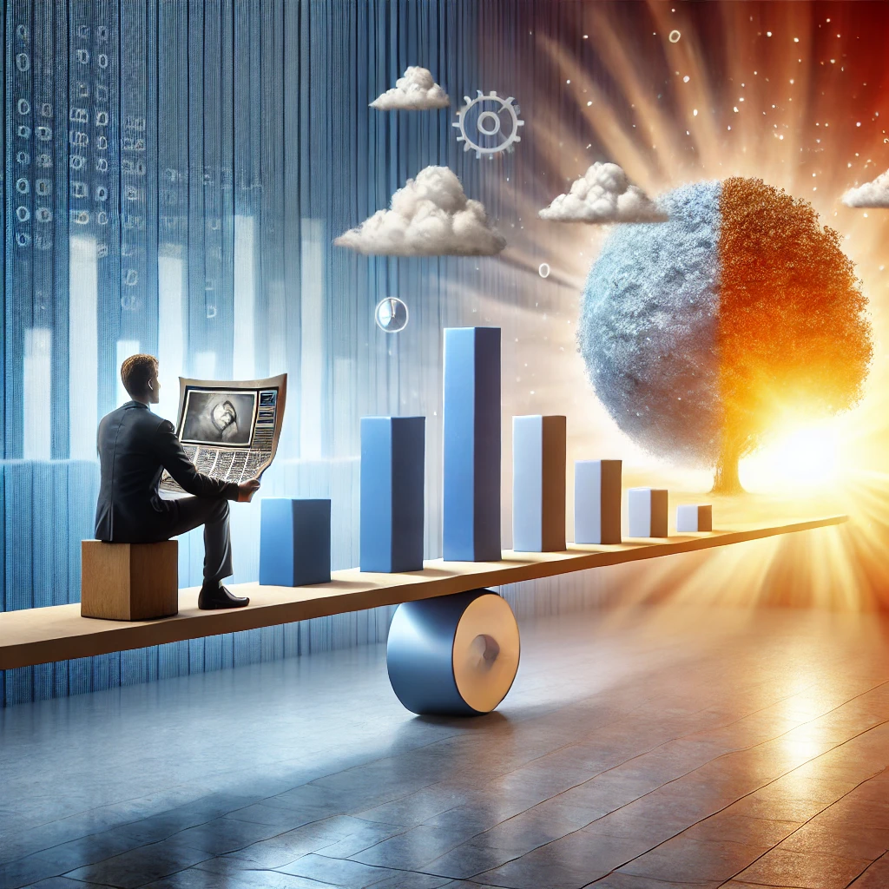

작가
한스 로슬링
출판일
2018년
감상평에 대한 AI그림
나는 뉴스를 하루에 한번은 꼭 챙겨본다. 주로 무거운 뉴스를 위주로 보다보니 자주 보면 꼭 마음이
심란해지는데 이 책은 내게 작은 위안을 주었다. 우리가 보는 뉴스에 나오는 세상보다, 통계에 따르면 실제 우리가 사는
세상은 훨씬 살기 좋다는 말을 들으면 누구라도 위안이 될테다. 하지만 동시에 비판적으로도 생각하게 되었다.
통계의 함정라는 것은 존재하기 마련이며 누군가는 뉴스에 나오는 것보다도 심각한 상황에 놓여있을
수 있다는 것. 그렇기에 현대 사회를 살아가는 사람으로서 미디어 리터러시와 통계에 대한
지식 또한 필요하다는 생각이 들었다.

감상평에 대한 AI평가
개인적 경험에서 출발해 사회적 문제에 대한 통찰로 나아가는 흐름이 자연스러운 감상평
✨ 위안(Comfort): 뉴스에서 보이는 세상보다 실제 현실이 더 긍정적이라는 사실에 안도감을 느낌.
✨ 비판적 사고(Critical Thinking): 통계의 함정과 뉴스에 나오지 않는 현실을 고려하며 균형 잡힌 시각을 가짐.
✨ 성찰(Reflection): 현대 사회를 살아가는 사람으로서 미디어 리터러시와 통계에 대한 지식의 필요성을 깨달음.